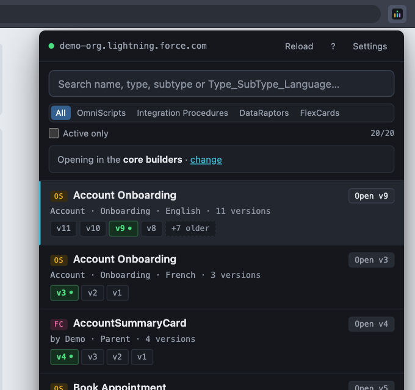

OmniStudio Finder
Chrome extension · toolbar popup
On the Chrome Web StoreFree
Find any OmniScript, Integration Procedure, DataRaptor or FlexCard in the org of the tab you are on. See every version, open the right one.
- Search as you type, or paste a
Type_SubType_Languagekey straight from a log. - Every version as a chip, the active one in green; Enter opens it.
- Opens the right designer for core OmniStudio or the Vlocity packages.
